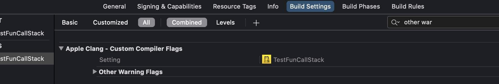

使用 Xcode 编译规则提升代码质量
随着项目的迭代，工程代码量越来越大，如果使用 Xcode 默认的编译警告级别，越来越多的隐患将被隐藏在代码中，这类隐患代码大部分来自旧代码，也有部分来自日常开发的代码，特别是在模块重构时，这些代码大概率会成为 bug 的发源地，也将会是后期优化的绊脚石。
由于 Objective-C 语言的动态性，部分不安全的代码写法在编译时并不会报错(error)，只是会产生警告 (warning)，而后者总会有意无意地总被忽略掉。通过新增加编译检查规则，提升编译器的校验级别，强制对可能存在隐患的代码拒绝编译通过，能尽可能减少人为出错，提升代码质量。
如何提升校验级别
Xcode 中允许开发者自行添加编译校验规则，如下图：

这些规则可以通过编译日志查询得到：
上图中紧接 -W 的字符串都是编译规则，具体含义可以去 Clang 文档上查找。找到需要的校验规则后，比如-Wunreachable-code，将其转换成 error 格式 -Werror=unreachable-code，然后填写到 Targets -> Build Settings ->Apple Clang-Custom Compiler Flags 中即可，再次编译时，原先 unreachable-code 地方的代码就会报错，提醒我们删掉不相关的代码，精简结构。
实用的校验规则
我们目前用到的规则有下面几条：
- 未用到的变量
- 规则：
-Werror=unused-variable - 例外：在变量前添加
__unused修饰
- 规则：
switch中case没有完全列举- 规则：
-Werror=switch - 例外：使用
default关键字。其实这里不建议使用default，如果后期因为业务代码变动case有增删改，它不会显示地报错误或者警告，只会默默地“吃掉”这些增删改，非常不便于错误排查。
- 规则：
- 方法有申明，但是没有实现
- 规则：
-Werror=incomplete-implementation - 例外：无例外，不允许出现。曾经碰到到在
.h里面有申明但是.m中忘记写实现的情况，险些酿成大错。
- 规则：
- 调用未申明的 selector
- 规则：
-Werror=undeclared-selector - 例外：
1
2
3
4#pragma clang diagnostic push
#pragma clang diagnostic ignored "-Wundeclared-selector"
[self performSelector:@selector(testFun)];
#pragma clang diagnostic pop
- 规则：
- 未实现标记为
@required的协议方法- 规则：
-Werror=protocol - 例外：如果不需要实现，申明改为
@optional；如果是@required必须要实现
- 规则：
- 不同指针类型间赋值(比如
NSNumber *赋值给NSString *、NSArray<NSNumber *> *赋值给NSArray<NSString *> *)- 规则：
-Werror=incompatible-pointer-types - 例外：尽量避免这种情况出现。如果很清楚后果，显示地类型转换
- 规则：
- 指针隐式赋值给基本类型（如 self 指针赋值给 int 变量）
- 规则：
-Werror=int-conversion - 例外：尽量避免这种情况出现。如果很清楚后果，显示地类型转换
- 规则：
- 不同枚举类型之间赋值
- 规则：
-Werror=enum-conversion - 例外：尽量避免这种情况出现。如果很清楚后果，显示地类型转换
- 规则：
- 不允许判断语句里面写成 “=”，如
if (a = b) // error- 规则：
-Werror=parentheses - 例外：多加一层括号，明确表示使用返回值进行判断
- 规则：
目前这些规则，已经帮我们避免了很多隐藏问题，后续会根据实际情况再增加或删除。
本博客所有文章除特别声明外，均采用 CC BY-SA 4.0 协议 ，转载请注明出处！